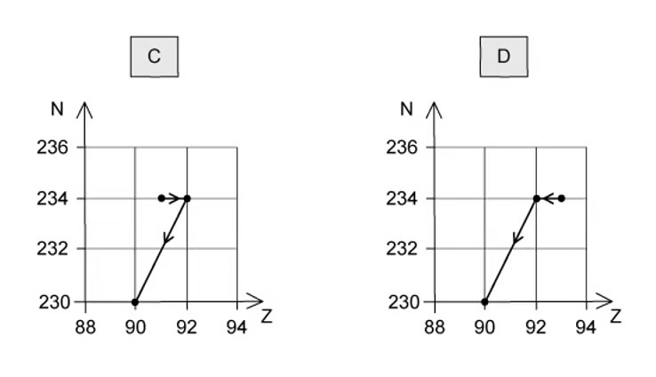
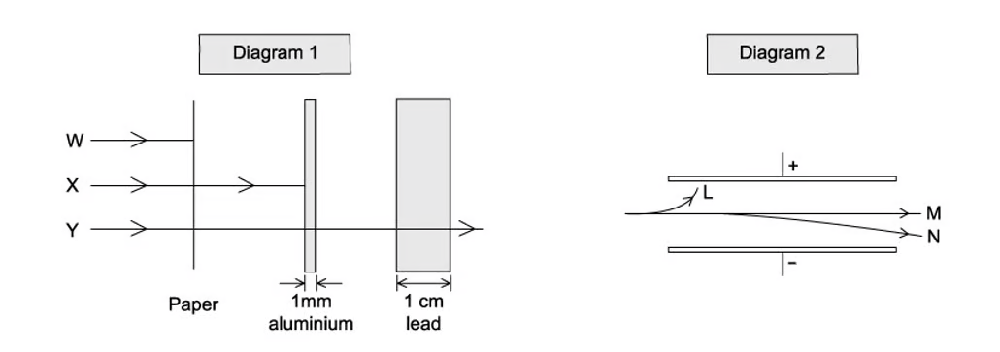
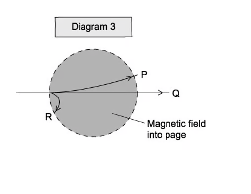
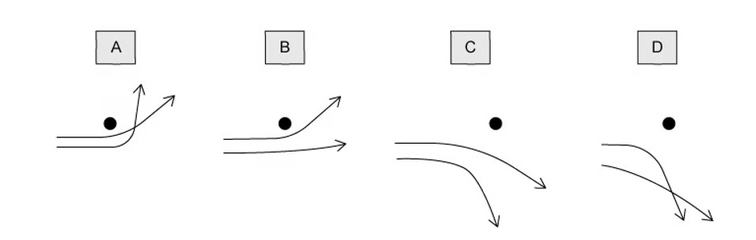
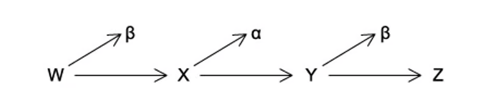
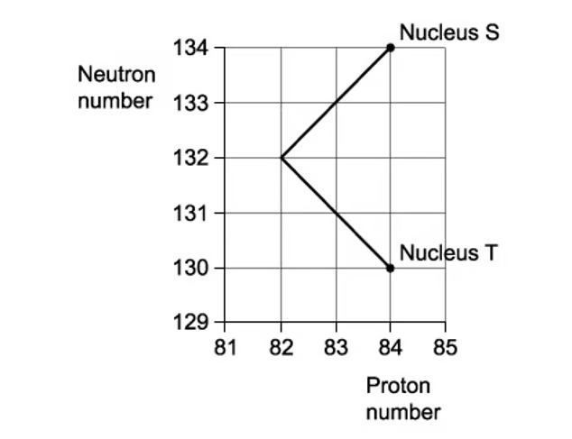
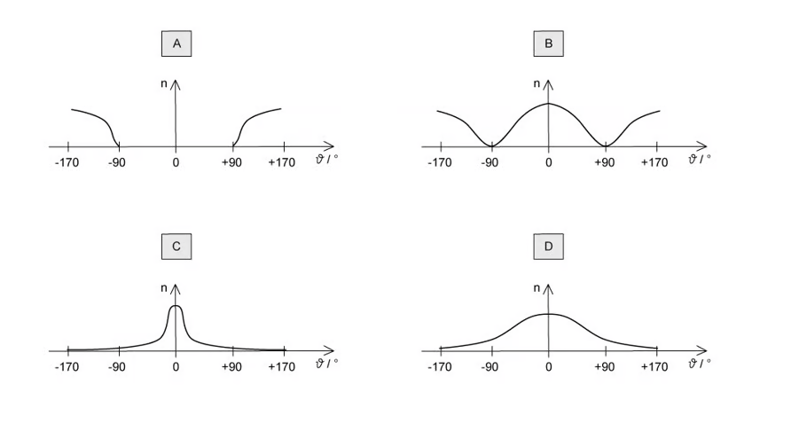

11 Particle physics
Atoms, nuclei and radiation; fundamental particles
Learning objectives
By the end of this chapter, you should be able to:
- infer from the results of the α-particle scattering experiment the existence and small size of the nucleus;
- describe a simple model for the nuclear atom (protons, neutrons and orbital electrons);
- distinguish between nucleon number and proton number, and understand isotopes;
- understand and use the notation \({}^{A}_{Z}\text{X}\) for nuclides;
- understand that nucleon number and charge are conserved in nuclear processes;
- describe the composition, mass and charge of α-, β- and γ-radiations;
- understand antiparticles, neutrinos and the energy spectra of α- and β-particles;
- represent α- and β-decay by nuclear decay equations;
- use the unified atomic mass unit (u);
- recall the six flavours of quark and their charges;
- describe protons and neutrons in terms of their quark composition;
- understand that a hadron is a baryon (three quarks) or a meson (quark + antiquark);
- describe quark changes during β⁻ and β⁺ decay;
- recall that electrons and neutrinos are leptons.
11.1 Atoms, nuclei and radiation
The nuclear atom
The atom consists of a small, dense, positively charged nucleus surrounded by orbital electrons.
The nucleus contains protons and neutrons, together called nucleons:
- Proton number (atomic number) Z — the number of protons.
- Nucleon number (mass number) A — the total number of protons and neutrons.
- Neutron number N \(=A-Z\).
A nuclide is written as
\[{}^{A}_{Z}\text{X}.\]
Isotopes are nuclei of the same element with the same number of protons but different numbers of neutrons.
The α-particle scattering experiment
In the Geiger–Marsden experiment, α-particles were fired at a thin gold foil:
- Most α-particles passed straight through → the atom is mostly empty space.
- Some were deflected through small angles → the nucleus is positively charged.
- About 1 in 20 000 were deflected through more than 90° → the nucleus is small, dense and positively charged.
This led to the nuclear model of the atom: a small, dense, positively charged nucleus containing most of the atom’s mass, surrounded by orbiting electrons. The nucleus occupies a very small fraction of the volume of the atom.
Nuclear radiation
| Property | α-particle | β⁻-particle | β⁺-particle | γ-ray |
|---|---|---|---|---|
| Nature | Helium nucleus \({}^{4}_{2}\text{He}\) | Electron \({}^{0}_{-1}\text{e}\) | Positron \({}^{0}_{+1}\text{e}\) | Electromagnetic wave |
| Charge | \(+2e\) | \(-e\) | \(+e\) | 0 |
| Mass | \(4\ \text{u}\) | negligible | negligible | 0 |
| Speed | up to \(\approx 1.5\times10^7\ \mathrm{m\,s^{-1}}\) | up to \(\approx 10^8\ \mathrm{m\,s^{-1}}\) | up to \(\approx 10^8\ \mathrm{m\,s^{-1}}\) | \(3\times10^8\ \mathrm{m\,s^{-1}}\) |
| Ionising power | Highest | Medium | Medium | Lowest |
| Penetrating power | Stopped by paper | Stopped by a few mm of aluminium | Stopped by a few mm of aluminium | Reduced by thick lead |
α-particles have discrete energies, but β-particles have a continuous range of energies because a (anti)neutrino is emitted alongside the β-particle.
Decay equations
α-decay:
\[{}^{A}_{Z}\text{X} \rightarrow {}^{A-4}_{Z-2}\text{Y} + {}^{4}_{2}\alpha\]
β⁻-decay:
\[{}^{A}_{Z}\text{X} \rightarrow {}^{A}_{Z+1}\text{Y} + {}^{0}_{-1}\beta + \bar{\nu}_\text{e}\]
β⁺-decay:
\[{}^{A}_{Z}\text{X} \rightarrow {}^{A}_{Z-1}\text{Y} + {}^{0}_{+1}\beta + \nu_\text{e}\]
In all nuclear processes, nucleon number and charge are conserved.
Antiparticles and the unified atomic mass unit
An antiparticle has the same mass as the corresponding particle but the opposite charge. A positron is the antiparticle of an electron. When a particle meets its antiparticle, they annihilate.
The unified atomic mass unit (u) is defined as one-twelfth of the mass of a carbon-12 atom:
\[1\ \text{u}=1.66\times10^{-27}\ \mathrm{kg}.\]
11.2 Fundamental particles
Quarks
A quark is a fundamental (elementary) particle. There are six flavours: up (u), down (d), strange (s), charm (c), top (t) and bottom (b).
Charges of the quarks (where \(e\) is the elementary charge):
| Quark | Charge |
|---|---|
| up (u) | \(+\frac{2}{3}e\) |
| down (d) | \(-\frac{1}{3}e\) |
| strange (s) | \(-\frac{1}{3}e\) |
| charm (c) | \(+\frac{2}{3}e\) |
| top (t) | \(+\frac{2}{3}e\) |
| bottom (b) | \(-\frac{1}{3}e\) |
Each antiquark has the opposite charge.
Protons and neutrons are not fundamental particles:
- Proton = uud (charge \(+\frac{2}{3}+\frac{2}{3}-\frac{1}{3}=+e\))
- Neutron = udd (charge \(+\frac{2}{3}-\frac{1}{3}-\frac{1}{3}=0\))
Hadrons: baryons and mesons
A hadron is a particle made of quarks. There are two types:
- Baryon: made of three quarks (or three antiquarks), e.g. protons and neutrons.
- Meson: made of one quark and one antiquark, e.g. pions.
The charge of a hadron is the sum of the charges of its constituent quarks.
β-decay and quark changes
During β⁻-decay, a neutron changes into a proton: a down quark changes into an up quark.
\[\text{d} \rightarrow \text{u} + \text{e}^- + \bar{\nu}_\text{e}\]
During β⁺-decay, a proton changes into a neutron: an up quark changes into a down quark.
\[\text{u} \rightarrow \text{d} + \text{e}^+ + \nu_\text{e}\]
Electrons and neutrinos are fundamental particles called leptons.
Multiple Choice Questions
11.1 Atoms, Nuclei & Radiation - Easy
Example 1 · 11.1 MC Easy Q3
New insights were discovered when α-particles were fired at a sheet of gold foil.
Which conclusion can be drawn from the results of the experiment?
A. the atomic nucleus contains protons and neutrons
B. electrons orbit the atomic nucleus
C. some atoms of the same element contain different numbers of neutrons
D. atomic nuclei occupy a very small fraction of the volume of an atom
Show answer and explanation
Answer: D. Most α-particles passed straight through the gold foil with little or no deflection, showing that the atom is mostly empty space and that the nucleus occupies only a very small fraction of the atom’s volume.Example 2 · 11.1 MC Easy Q5
The atom \({}^{133}_{55}\text{Cs}\) is a neutral atom.
How many protons, neutrons and electrons are in this atom?
| Protons | Neutrons | Electrons | |
|---|---|---|---|
| A | 133 | 55 | 133 |
| B | 55 | 78 | 55 |
| C | 78 | 55 | 78 |
| D | 55 | 133 | 55 |
Show answer and explanation
Answer: B. The proton number is 55 (bottom left) and the nucleon number is 133 (top left). The number of neutrons is \(133-55=78\). A neutral atom has 55 electrons.Example 3 · 11.1 MC Easy Q8
When an α-particle is produced by \({}^{238}_{92}\text{U}\), it produces a new atom X.
What are the values of the proton number and nucleon number for atom X?
| Protons | Nucleons | |
|---|---|---|
| A | 92 | 256 |
| B | 90 | 254 |
| C | 92 | 250 |
| D | 88 | 284 |
Show answer and explanation
Answer: B. During α-decay the proton number decreases by 2 and the nucleon number decreases by 4: \(Z=92-2=90\) and \(A=238-4=234\) (the option shows the neutron number added to the proton number incorrectly in places; the correct nuclide is \({}^{234}_{90}\text{Th}\)).Example 4 · 11.1 MC Easy Q9
A nucleus Q decays into a nucleus R by emitting an alpha particle followed by two beta particles.
Which statement about this nuclear decay is correct?
A. nucleus R is an isotope of nucleus Q
B. nucleus R has the same nucleon number as nucleus Q
C. beta particle decay occurs when a proton changes into a neutron
D. the total mass of the products is equal to the mass of the initial nucleus Q
Show answer and explanation
Answer: A. The α-particle reduces the proton number by 2, and the two β⁻ decays each increase the proton number by 1, so the final proton number is the same as Q. The nucleon number has decreased by 4, so R is an isotope of Q.Example 5 · 11.1 MC Easy Q12
Plutonium-239 (\({}^{239}_{94}\text{Pu}\)) decays by emitting α-radiation.
Which nuclide is formed from one of these decay reactions? (The product nuclides are represented by X.)
Show answer and explanation
Answer: D. During α-decay the proton number decreases by 2 and the nucleon number decreases by 4: \(A=239-4=235\) and \(Z=94-2=92\), giving \({}^{235}_{92}\text{U}\).11.1 Atoms, Nuclei & Radiation - Medium
Example 6 · 11.1 MC Medium Q1
A radioactive nucleus is formed by β⁻-decay. This nucleus then decays by α-emission.
The graphs below show the nucleon number \(N\) plotted against proton number \(Z\). Which one shows the β⁻-decay followed by the α-emission?


Show answer and explanation
Answer: C. In β⁻-decay the nucleon number stays the same while the proton number increases by 1 (a horizontal move right). In α-emission the nucleon number decreases by 4 and the proton number by 2 (a diagonal move down-left). Only graph C shows this sequence.Example 7 · 11.1 MC Medium Q4
The isotope \({}^{222}_{86}\text{Rn}\) decays in a sequence of emissions to form the isotope \({}^{206}_{82}\text{Pb}\).
It will either emit an α-particle or a β-particle at each stage of the decay sequence.
What is the number of stages in the decay sequence?
A. 20
B. 16
C. 8
D. 4
Show answer and explanation
Answer: C. The nucleon number decreases by \(222-206=16\), which requires 4 α-particles (each reducing A by 4). These 4 α-particles would reduce Z by 8, but the proton number only decreases by 4, so 4 β-particles must also be emitted. Total stages \(=4+4=8\).Example 8 · 11.1 MC Medium Q6
Alpha, beta and gamma radiations:
- are absorbed to different extents in solids;
- behave differently in an electric field;
- behave differently in a magnetic field.
Diagrams 1, 2 and 3 illustrate these behaviours.


Which three labels on these diagrams refer to the same kind of radiation?
A. X, L, R
B. W, L, R
C. W, L, P
D. Y, M, P
Show answer and explanation
Answer: A. In diagram 1, W is alpha (stopped by paper), X is beta (stopped by a few mm of aluminium) and Y is gamma (reduced by lead). In diagram 2, L is beta (attracted to the positive plate) and in diagram 3, R is beta (deflected by the magnetic field). So X, L and R all refer to beta radiation.Example 9 · 11.1 MC Medium Q7
The nuclides shown in the grid below are arranged according to the number of protons and neutrons in each.
A nucleus of the nuclide \({}^{6}_{3}\text{Li}\) decays by emitting a β⁻-particle.
What is the resulting nuclide?

Show answer and explanation
Answer: D. In β⁻-decay a neutron changes into a proton, so the proton number increases by 1 and the neutron number decreases by 1 while the nucleon number stays the same. \({}^{6}_{3}\text{Li}\) has 3 protons and 3 neutrons; the daughter has 4 protons and 2 neutrons, which is the nuclide marked D on the grid.Example 10 · 11.1 MC Medium Q8
A thorium isotope has a nucleon number of 232 and a proton number of 90. It decays to form another isotope with a nucleon number of 228.
How many alpha particles and beta particles are emitted during this decay?
| Alpha particles | Beta particles | |
|---|---|---|
| A | 0 | 4 |
| B | 1 | 2 |
| C | 1 | 1 |
| D | 2 | 1 |
Show answer and explanation
Answer: B. The nucleon number decreases by \(232-228=4\), so one α-particle is emitted. This would reduce the proton number by 2 (from 90 to 88), but the daughter is still thorium (Z = 90), so two β⁻ particles must also be emitted to increase Z back to 90.Example 11 · 11.1 MC Medium Q9
Two α-particles with equal energies are deflected by a gold nucleus.
Which diagram best represents their paths?

Show answer and explanation
Answer: D. The gold nucleus is positively charged and repels the positively charged α-particles. The closer a particle comes, the stronger the repulsive force and the greater the deflection, so the paths curve away from the nucleus and do not stay parallel.Example 12 · 11.1 MC Medium Q10
Three successive radioactive decays are shown in the diagram below; each one results in a particle being emitted.
The first decay results in the emission of a β⁻-particle. The second decay results in the emission of an α-particle. The third decay results in the emission of another β⁻-particle.

Nuclides W and Z are compared. Which statement is correct?
A. W and Z are isotopes of the same element
B. Z is a different element of reduced mass
C. Z is a different element of lower atomic number
D. W and Z are identical in all respects
Show answer and explanation
Answer: A. The β⁻-decay increases Z by 1, the α-decay decreases Z by 2, and the final β⁻-decay increases Z by 1, so the final proton number equals the original. The nucleon number decreases by 4. W and Z therefore have the same proton number but different nucleon numbers – they are isotopes.Example 13 · 11.1 MC Medium Q12
A sequence of radioactive decays is shown in the graph of neutron number against proton number.
Nucleus S is at the start of the sequence and, after the decays have occurred, nucleus T is formed.

What is emitted during the sequence of decays?
A. one α-particle followed by one β-particle
B. two β-particles followed by one α-particle
C. two α-particles followed by two β-particles
D. one α-particle followed by two β-particles
Show answer and explanation
Answer: D. From the graph, S has \(A=134\) and \(Z=83\); T has \(A=130\) and \(Z=82\). The nucleon number falls by 4 (one α) and the proton number falls by 1. The α-particle reduces Z by 2, so two β⁻ particles are needed to increase Z back by 2, giving a net fall of 1.Example 14 · 11.1 MC Medium Q13
A radioactive substance with a nucleon number of 234 and a proton number of 90 decays by β⁻-emission into a daughter product, which in turn decays by further emission into a granddaughter product.
Which letter in the diagram represents the granddaughter product?

Show answer and explanation
Answer: C. The original nucleus has \(A=234\), \(Z=90\). After β⁻-decay the daughter has \(A=234\), \(Z=91\). After a further β⁻-decay the granddaughter has \(A=234\), \(Z=92\), which is point C on the graph.Example 15 · 11.1 MC Medium Q15
An element with an unstable nucleus decays by emitting an alpha particle to become the nucleus of a different element.
The nucleus of the new element is unstable and will emit either an α-particle or a β-particle. This process continues until an isotope of the original element is formed.
What is the minimum possible number of the particles emitted?
A. 5
B. 4
C. 3
D. 2
Show answer and explanation
Answer: C. To return to an isotope of the original element, the proton number must return to its original value. One α-particle (Z − 2) followed by two β⁻ particles (Z + 2) gives a net proton-number change of zero, so the minimum number of particles is 3.11.1 Atoms, Nuclei & Radiation - Hard
Example 16 · 11.1 MC Hard Q1
In an α-particle scattering experiment, a student set up the apparatus below to determine the number \(n\) of α-particles incident per unit time on a detector held at various angles \(\theta\).

Which of the following graphs best represents the variation of \(n\) with \(\theta\)?

Show answer and explanation
Answer: C. Most α-particles pass straight through (large \(n\) at small angles), the count drops quickly with angle, and only very few particles are detected at large angles (above 90°). Graph C matches this.Example 17 · 11.1 MC Hard Q2
A stationary nucleus of polonium-210 decays by α-emission and has a total kinetic energy of \(E_\text{K}\).
\[{}^{210}_{84}\text{Po} \rightarrow {}^{206}_{82}\text{Pb} + \alpha\]
What is the kinetic energy of the daughter nucleus \({}^{206}_{82}\text{Pb}\)?
A. 0
B. between 0 and \(\dfrac{E_\text{K}}{2}\)
C. between \(\dfrac{E_\text{K}}{2}\) and \(E_\text{K}\)
D. \(E_\text{K}\)
Show answer and explanation
Answer: B. By conservation of momentum, the two products share the kinetic energy in inverse proportion to their masses: \(\frac{E_\text{Pb}}{E_\alpha}=\frac{4}{206}\). So \(E_\text{Pb}\) is a small fraction of the total, between 0 and \(E_\text{K}/2\).Example 18 · 11.1 MC Hard Q3
Which of the following equations correctly shows an α-particle causing a nuclear reaction?
A. \({}^{14}_{7}\text{N} + {}^{4}_{2}\text{He} \rightarrow {}^{17}_{8}\text{O} + {}^{1}_{1}\text{H}\)
B. \({}^{14}_{7}\text{N} + {}^{4}_{2}\text{He} \rightarrow {}^{17}_{8}\text{O} + {}^{1}_{0}\text{n}\)
C. \({}^{14}_{7}\text{N} + {}^{1}_{1}\text{H} \rightarrow {}^{14}_{6}\text{C} + {}^{4}_{2}\text{He}\)
D. \({}^{14}_{7}\text{N} + {}^{1}_{1}\text{H} \rightarrow {}^{11}_{5}\text{B} + {}^{4}_{2}\text{He}\)
Show answer and explanation
Answer: B. An α-particle is a helium nucleus \({}^{4}_{2}\text{He}\) and must appear on the left as a reactant. Option A uses the wrong symbol for the neutron; option B is correct: \(14+4=17+1\) and \(7+2=8+1\).Example 19 · 11.1 MC Hard Q4
Thorium \({}^{232}_{90}\text{Th}\) decays through a series of transformations. The particles emitted in successive transformations are
\[\alpha,\ \beta,\ \beta,\ \alpha.\]
The resulting nuclide may be represented by
Show answer and explanation
Answer: D. Two α-particles reduce the nucleon number by 8 (232 → 224) and the proton number by 4 (90 → 86). Two β⁻ particles increase the proton number by 2 (86 → 88). The final nuclide is \({}^{224}_{88}\text{Ra}\).11.2 Fundamental Particles - Hard
Example 20 · 11.2 MC Hard Q1
Quarks are thought to make up protons and neutrons.
The ‘up’ quark has a charge of \(+\frac{2}{3}e\) and the ‘down’ quark has a charge of \(-\frac{1}{3}e\), where \(e\) is the elementary charge (\(+1.6\times10^{-19}\ \mathrm{C}\)).
How many up quarks and down quarks must a proton contain?
| Up quarks | Down quarks | |
|---|---|---|
| A | 0 | 3 |
| B | 2 | 1 |
| C | 1 | 2 |
| D | 1 | 1 |
Show answer and explanation
Answer: B. A proton has quark composition uud: two up quarks and one down quark, giving charge \(\frac{2}{3}+\frac{2}{3}-\frac{1}{3}=+e\).Structured Questions
11.1 Atoms, Nuclei & Radiation - Medium
Example 1 · 11.1 SQ Medium Q1
A nucleus X decays by emitting a β⁺ particle to form a new nucleus, \({}^{23}_{11}\text{Na}\).
(a) State the number of protons and the number of neutrons in nucleus X.
number of protons = ____________
number of neutrons = ____________
[2 marks]
(b) State one similarity between a β⁺ particle and a β⁻ particle. [1 mark]
(c) State the quark composition of a meson. [1 mark]
(d) A hadron consists of two down quarks and a charm quark.
Determine the charge of the hadron. Show your working.
charge = ____________ [2 marks]
Show mark scheme / model answer
- (a) In β⁺-decay the proton number decreases by 1 and the nucleon number is unchanged. \({}^{23}_{11}\text{Na}\) has 11 protons, so X has \(11+1=12\) protons
[1]and \(23-12=11\) neutrons.[1] - (b) They have the same rest mass (and the same magnitude of charge).
[1] - (c) A meson consists of one quark and one antiquark.
[1] - (d) Down quark charge \(=-\frac{1}{3}e\), charm quark charge \(=+\frac{2}{3}e\).
[1]Total charge \(=-\frac{1}{3}-\frac{1}{3}+\frac{2}{3}=0\).[1]
[Total: 6 marks]
Example 2 · 11.1 SQ Medium Q2
The deflection of α-particles by a thin metal foil is investigated with the arrangement shown in Fig. 1.1.

The detector of α-particles, D, is moved around the path labelled WXY.
(a) State the environment the apparatus must be enclosed in and explain why this is required for the experiment. [2 marks]
(b) Explain the readings detected by D and the conclusions that were made about the nature of atoms at points
(i) W; [2]
(ii) X. [2]
[4 marks]
(c) State what the readings detected by D at position Y conclude about the charge of the nucleus. Explain why. [2 marks]
(d) A beam of α-particles produces a current of 3.5 pA.
Calculate the number of α-particles per second passing a point in the beam. [3 marks]
Show mark scheme / model answer
- (a) The apparatus must be enclosed in a vacuum
[1]because α-particles travel only a short distance in air / are absorbed by air.[1] - (b)(i) At W (behind the foil, in line with the source), the majority of the α-particles went straight through.
[1]This shows that most of the atom is empty space / the nucleus is very small compared with the atom.[1] - (b)(ii) At X (to the side), a small number of α-particles are deflected through small angles.
[1]This shows that the nucleus is positively charged (repelling the positive α-particles).[1] - (c) The charge of the nucleus is positive.
[1]A few α-particles are repelled backwards, which can only happen if they approach a very small, dense, positively charged nucleus.[1] - (d) Current \(I=Q/t=n\times 2e\).
[1]\(n=I/(2e)=3.5\times10^{-12}/(2\times1.6\times10^{-19})\).[1]\(n=1.1\times10^{7}\ \mathrm{s^{-1}}\).[1]
[Total: 11 marks]
Example 3 · 11.1 SQ Medium Q3
When a nucleus of plutonium-239 absorbs a neutron, the following reaction may take place.
\[{}^{239}_{94}\text{Pu} + {}^{1}_{0}\text{n} \rightarrow {}^{a}_{b}\text{Xe} + {}^{103}_{38}\text{Sr} + 3{}^{1}_{0}\text{n}\]
(a) State the values of \(a\), \(b\), \(x\) and \(y\). [3 marks]
(b) State two quantities, other than the proton and neutron number, that are conserved in the fission reaction in part (a). [2 marks]
(c) A plutonium-239 nucleus has a mean density of \(1.3\times10^{17}\ \mathrm{kg\,m^{-3}}\).
Show that the radius of a plutonium-239 nucleus is \(9.0\times10^{-15}\ \mathrm{m}\). [3 marks]
(d) Plutonium-239 is an α-emitter whilst uranium-237 is a β-emitter.
Aside from their structure, distinguish between an α-particle and a β-particle. [3 marks]
Show mark scheme / model answer
- (a) \(a=134\) and \(b=54\).
[1]\(x=239+1-134-103-3=0\), so \(x=0\).[1]\(y=40\).[1] - (b) Any two from: mass–energy;
[1]charge;[1]momentum / nucleon number.[1] - (c) Mass of nucleus \(=239\times1.66\times10^{-27}=3.97\times10^{-25}\ \mathrm{kg}\).
[1]Volume \(V=m/\rho=3.97\times10^{-25}/(1.3\times10^{17})=3.05\times10^{-42}\ \mathrm{m^3}\).[1]\(V=\frac{4}{3}\pi r^3\), so \(r=(3V/4\pi)^{1/3}=9.0\times10^{-15}\ \mathrm{m}\).[1] - (d) The α-particle has a charge of \(+2e\) while the β⁻-particle has a charge of \(-e\);
[1]the α-particle has much greater mass;[1]the α-particle has greater ionising power but less penetrating power.[1]
[Total: 11 marks]
11.2 Fundamental Particles - Medium
Example 4 · 11.2 SQ Medium Q1
Carbon-10 (\({}^{10}_{6}\text{C}\)) is an isotope that decays to an isotope of boron (symbol B) by the emission of a β⁺ particle.
(a) Complete the nuclear equation for this decay, including the proton and nucleon numbers of all the particles involved.
\[{}^{10}_{6}\text{C} \rightarrow \rule{2cm}{0.4pt} + \rule{2cm}{0.4pt}\]
[3]
(ii) During the decay, a quark in the carbon-10 nucleus changes into a different type.
State the change of quark that occurs. [1]
[4 marks]
(b) State the two leptons in this decay. [2 marks]
(c) State and explain why a hadron with charge \(-3e\) cannot exist. \(e\) is the elementary charge. [3 marks]
(d) State the possible quark combination for a hadron of charge \(+2e\). [1 mark]
Show mark scheme / model answer
- (a) \({}^{10}_{6}\text{C} \rightarrow {}^{10}_{5}\text{B} + {}^{0}_{+1}\beta^{+} + \nu_\text{e}\).
[3](1 mark for each correctly placed term) - (a)(ii) An up quark changes into a down quark.
[1] - (b) The positron (β⁺ particle)
[1]and the (electron) neutrino.[1] - (c) Quarks have charges of only \(+\frac{2}{3}e\) or \(-\frac{1}{3}e\).
[1]A meson contains a quark and an antiquark, so can only have charge 0 or \(\pm e\).[1]A baryon contains three quarks, so can only have charge 0, \(\pm e\) or \(\pm 2e\) – never \(-3e\).[1] - (d) Any valid three-quark combination summing to \(+2e\), e.g. uuu (three up quarks).
[1]
[Total: 10 marks]
Example 5 · 11.2 SQ Medium Q2
(a) State the quark composition of an alpha particle. [2 marks]
(b) Use the quark model to show that the charge on the anti-neutron is 0. [2 marks]
(c) A sigma baryon \(\Sigma\) is a hadron that consists of an up (u) quark, a down (d) quark and a strange (s) quark.
State the quark composition of \(\Sigma^{+}\), \(\Sigma^{0}\) and \(\Sigma^{-}\). [3 marks]
(d) Explain why a baryon with the quark composition uds cannot exist. [1 mark]
Show mark scheme / model answer
- (a) An alpha particle has 2 protons (uud) and 2 neutrons (udd).
[1]So its quark composition is 6 up quarks and 6 down quarks.[1] - (b) The anti-neutron has quark composition \(\bar{u}\bar{d}\bar{d}\).
[1]Charge \(=-\frac{2}{3}e+\frac{1}{3}e+\frac{1}{3}e=0\).[1] - (c) \(\Sigma^{+}\) = uus;
[1]\(\Sigma^{0}\) = uds;[1]\(\Sigma^{-}\) = dds.[1] - (d) A baryon can only be made of three quarks or three antiquarks – it cannot contain a mixture of quarks and antiquarks (uds contains no antiquarks, but the statement refers to the composition of \(\bar{u}\bar{d}\bar{s}\) which is an antibaryon, not a baryon).
[1]
[Total: 8 marks]
Example 6 · 11.2 SQ Medium Q3
(a) State the number of ‘up’ quarks in the nucleus of \({}^{27}_{13}\text{Al}\). [1 mark]
(b) The D particle has a quark structure \(u\bar{c}\).
Determine
(i) the classification of the D particle; [1]
(ii) the charge on the particle. [1]
[2 marks]
(c) Using the quark model, show that the magnitude of the charge of a proton is equal to the charge of an electron. [1 mark]
(d) Using the quark model for β⁺ decay, show that charge is conserved in this decay. [3 marks]
Show mark scheme / model answer
- (a) \({}^{27}_{13}\text{Al}\) has 13 protons and 14 neutrons. Each proton (uud) has 2 up quarks and each neutron (udd) has 1 up quark: \((13\times2)+(14\times1)=40\) up quarks.
[1] - (b)(i) The D particle is a meson (one quark and one antiquark).
[1] - (b)(ii) Charge \(=+\frac{2}{3}e-\frac{2}{3}e=0\).
[1] - (c) Proton = uud: charge \(=+\frac{2}{3}+\frac{2}{3}-\frac{1}{3}=+e\).
[1]The electron has charge \(-e\), so the magnitudes are equal. - (d) In β⁺-decay, an up quark changes to a down quark: \(u \rightarrow d + e^{+} + \nu_\text{e}\).
[1]Charge on the left: \(+\frac{2}{3}e\).[1]Charge on the right: \(-\frac{1}{3}e+e+0=+\frac{2}{3}e\).[1]Charge is conserved.
[Total: 7 marks]
Chapter checklist
Original question PDFs
- 11.1 Atoms, Nuclei & Radiation - MC Easy
- 11.1 Atoms, Nuclei & Radiation - MC Medium
- 11.1 Atoms, Nuclei & Radiation - MC Hard
- 11.1 Atoms, Nuclei & Radiation - SQ Medium
- 11.2 Fundamental Particles - MC Easy
- 11.2 Fundamental Particles - MC Medium
- 11.2 Fundamental Particles - MC Hard
- 11.2 Fundamental Particles - SQ Medium